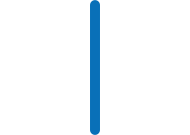

I started my career believing design should be done with people — not just for them.
Fresh out of school, I immersed myself in community-focused work — facilitating youth engagement workshops, helping neighbourhoods shape the spaces they'd live in. What I learned wasn't a methodology. It was a conviction: that the people closest to a problem carry the most useful knowledge about it, and that the designer's job is to create the conditions for that knowledge to surface. That belief has shaped everything since.
Theme park design taught me what experiences are actually for: leaving people changed in some small way.
Designing destination attractions showed me something that boardrooms rarely teach: that people don't remember what they did — they remember how they felt, and whether it was worth coming back for. The best experiences don't just serve a function. They cut through the noise, earn attention, and leave people changed in some small way. I've spent the rest of my career trying to bring that standard into contexts where it's harder to achieve: enterprise software, financial services, organizational strategy.
Moving in-house sharpened a different kind of design instinct, rooted in solving clear business objectives.
Working inside CIBC and Atlassian — not as an outside consultant, but embedded in the org — showed me that the hardest design problem isn't the artifact. It's the alignment. Getting teams across different functions, geographies, and incentives to see the same problem and move in the same direction is a design challenge as real as any blueprint or prototype. My spatial and experiential background gave me an unusual tool for this: the ability to make complexity visible, and to make a shared vision feel tangible enough to act on.
Today, I work independently, lending my rounded experiences with clients solving holistic challenges.
I bring all three of those lenses — participatory research, experiential thinking, and in-house organizational fluency — to organizations navigating challenges that don't fit neatly inside one discipline. I'm most useful when the brief isn't written yet, when teams need to align before they design, or when a big idea needs to be made legible enough to commit to.

Here's what I actually do, and how I do it.
Research & Discovery
I help you diagnose the gap between what you offer and what people actually need — across digital, human, and physical touchpoints. I design research engagements that go beyond surveys and stakeholder interviews, bringing the people you're designing for into the room so insights come from experience, not assumption.
Featured Project: The Future of Movies: What Do Kids Think?
Featured Project: The Future of Movies: What Do Kids Think?
Strategic Storytelling
I translate research into a clear point of view — so everyone sees the full picture before committing to a direction. I turn complex findings into narratives, frameworks, and vision decks that give leadership a shared language and a foundation for the work ahead.
Featured Project: Into the Mind of a Storyteller: Toronto Int'l Film Festival
Featured Project: Into the Mind of a Storyteller: Toronto Int'l Film Festival
Experience Planning & Prototyping
I give form to the strategy — testing how it feels before it gets built, whether that's a digital service, a physical space, or both. I use service blueprinting, experience frameworks, and low-fidelity prototypes to make an abstract direction concrete enough to pressure-test and refine.
Featured Project: Aligning to the New-to-Canada Journey
Featured Project: Aligning to the New-to-Canada Journey
Program & Project Leadership
I help teams get organized around a shared plan — with clear ownership, defined milestones, and a way to track what's working. I'm comfortable leading cross-functional programs from the inside, aligning stakeholders across functions and geographies, and making sure the strategic vision survives contact with delivery.
Featured Project: Advisory Services Next
Featured Project: Advisory Services Next
What our collaboration could look like
Co-Design Workshop
Teams make better decisions when the people they're designing for are in the room — not just their survey responses.
A facilitated co-creation or participatory design session that produces real insights, a concept portfolio, or a strategic foundation. Includes design, facilitation, and a post-session synthesis. On-site or virtual.
Scoped as a standalone day engagement. Participant recruitment not included.
Research & Strategy Sprint
Committing to a direction without grounding it in real audience insight is expensive — both in time and in the cost of building the wrong thing.
A scoped engagement: field research, participatory workshops, and a strategy deliverable — a journey map, experience framework, or visioning deck — that gives you something concrete to act on.
Typically 2–8 weeks, shaped around your timeline and what needs to be decided before the next phase of work.
Embedded Specialist
Some challenges need someone inside the work, not advising from the sidelines. Continuity and relationship are part of the value.
Ongoing embedded presence on your team — providing user research, experience strategy, and cross-disciplinary coordination across a multi-phase program.
Best for 3+ month engagements where the work evolves and a single handoff wouldn't serve the project.